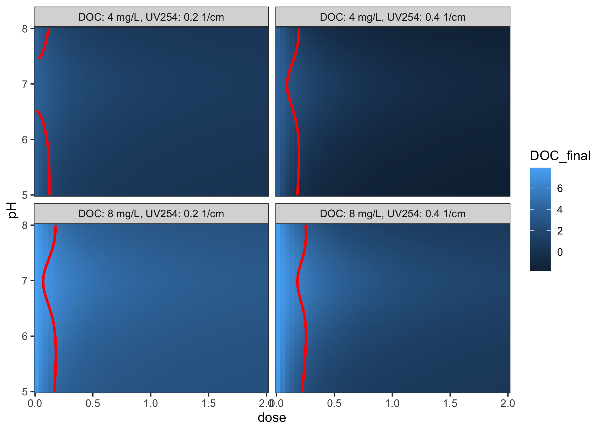

The goal of edwards97 is to implement the Edwards (1997) Langmuir-based semiempirical coagulation model, which predicts the concentration of organic carbon remaining in water after treatment with an Al- or Fe-based coagulant. Methods and example data are provided to optimise empirical coefficients.
This package is experimental, under constant development, and is in no way guaranteed to give accurate predictions (yet).
Installation
You can install the development version from GitHub with:
Example
This is a basic example which shows you how to solve a common problem:
library(edwards97)
fit_data_alum <- edwards_data("Al")
# optimise coefficients for this dataset
fit <- fit_edwards_optim(fit_data_alum, initial_coefs = edwards_coefs("Al"))
# view fit results
print(fit)
#> <edwards_fit_optim>
#> Fit optimised for `fit_data_alum`
#> Coefficients:
#> x3 = 5.22, x2 = -76.2, x1 = 282, K1 = -0.0328, K2 = 0.264, b = 0.0823, root = -1
#> Performance:
#> r² = 0.953, RMSE = 0.959 mg/L, number of finite observations = 500
#> Input data:
#> DOC dose pH UV254
#> Min. : 1.80 Min. :0.0084 Min. :4.500 Min. :0.0260
#> 1st Qu.: 2.81 1st Qu.:0.1323 1st Qu.:5.808 1st Qu.:0.0810
#> Median : 3.94 Median :0.2290 Median :6.500 Median :0.1060
#> Mean : 6.36 Mean :0.2644 Mean :6.430 Mean :0.2323
#> 3rd Qu.: 6.70 3rd Qu.:0.3543 3rd Qu.:6.955 3rd Qu.:0.2470
#> Max. :26.50 Max. :1.5152 Max. :7.900 Max. :1.3550
#> NA's :629 NA's :629 NA's :629 NA's :629
#> DOC_final Predictions Langmuir a Sorbable DOC (%)
#> Min. : 1.030 Min. : 0.683 Min. : 23.94 Min. :78.25
#> 1st Qu.: 1.968 1st Qu.: 1.874 1st Qu.: 28.63 1st Qu.:80.88
#> Median : 2.700 Median : 2.691 Median : 43.43 Median :83.25
#> Mean : 3.793 Mean : 3.732 Mean : 58.28 Mean :83.67
#> 3rd Qu.: 4.025 3rd Qu.: 4.353 3rd Qu.: 87.19 3rd Qu.:85.40
#> Max. :26.610 Max. :19.820 Max. :199.74 Max. :92.41
#> NA's :629 NA's :629 NA's :629 NA's :629
plot(fit)
Using the fit, you can make predictions about unknown inputs:
grid <- coagulate_grid(fit, DOC = c(4, 8), UV254 = c(0.2, 0.4)) %>%
mutate(label = glue::glue("DOC: {DOC} mg/L, UV254: {UV254} 1/cm"))
diminishing_returns <- grid %>%
group_by(label, pH) %>%
summarise(dose = dose_of_diminishing_returns(dose, DOC_final, threshold = 0.3 / 10))
ggplot(grid, aes(x = dose, y = pH)) +
geom_raster(aes(fill = DOC_final)) +
geom_path(data = diminishing_returns, col = "red", size = 1) +
facet_wrap(vars(label)) +
coord_cartesian(expand = FALSE)
References
Edwards, M. 1997. Predicting DOC removal during enhanced coagulation. Journal - American Water Works Association, 89: 78–89. https://doi.org/10.1002/j.1551-8833.1997.tb08229.x